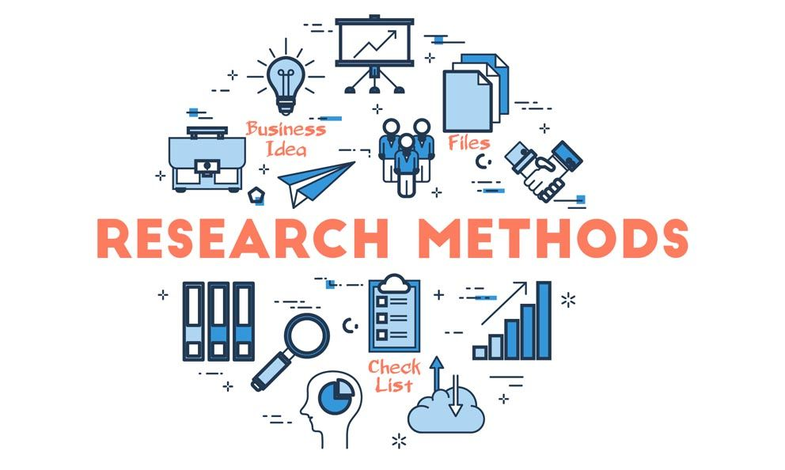
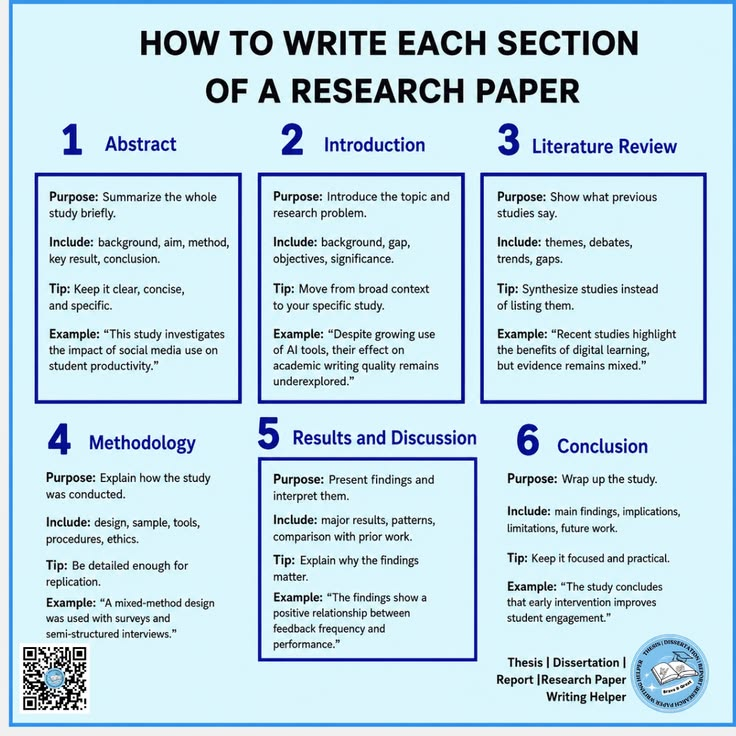

PROFESSIONAL SKILLS / SESSION 05
Introduction to Research and Research Papers
Understanding research and academic writing.

Overview
Understanding research and academic writing.
Learning outcomes
- Identify the basic components of a research paper.
- Understand how research identifies problems and explores ideas.
- Present research findings in an organized manner.
Activities
A guest session introducing research and the components of academic research papers.
My reflection
This guest session explained the importance of conducting research and introduced the basic components of an academic research paper. I learned how research helps identify problems, explore new ideas, and present findings in an organized manner. This knowledge will support my future academic projects.

